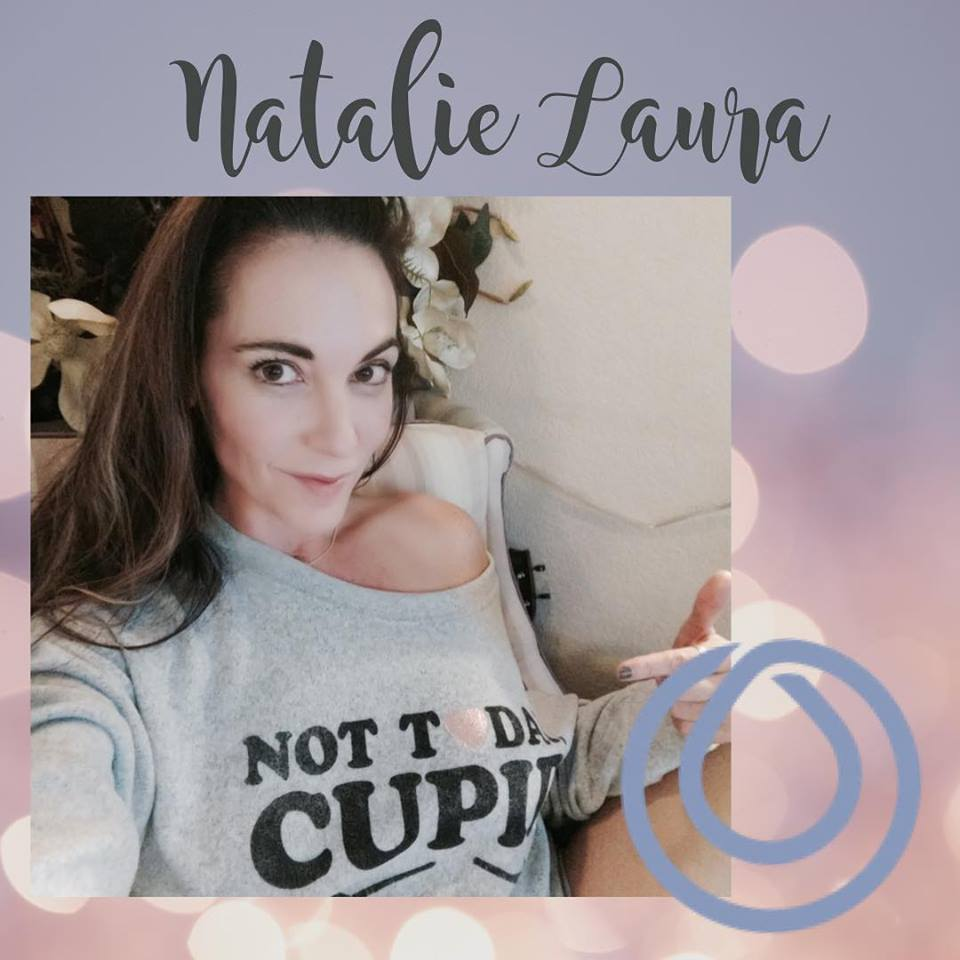

About Us
I've spent most of my career working for Sevilleta LTER research in New Mexico trapping, counting, and weighing plants, rodents, and lizards. My focus was on Long Term Ecological Research projects. I then relocated to Wisconsin and transitioned into the Health Insurance Industry because I grew tired of rodents and lizards. It was in this space where I learned day to day office functions in an established buisiness as well as a startup. I spent a five years learning how to manage Key (Large Group) Accounts within the Brokerage and Health Insurance world before taking a break from all those snakes and lizards to raise a family.
I have three daughters: Sofia (age 12), Angelina (age 9) and Scarlett (age 8). They all participate in sports and music as well as other extra-curricular activities at school. We frequently rock climb at Adventure Rock, and ski at Little Switzerland. We occasionally watch the Packers. We usually get along very well, but when there is a lot of fighting, whining or other such nonsense we spend quite a lot of time in Time Out. One minute for every year of age is recommended. As you can imagine, this is when I get most of my programming work done because I'm in my mid-forties and that is almost a entire hour to myself several times a day.